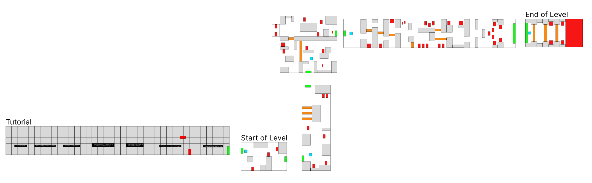
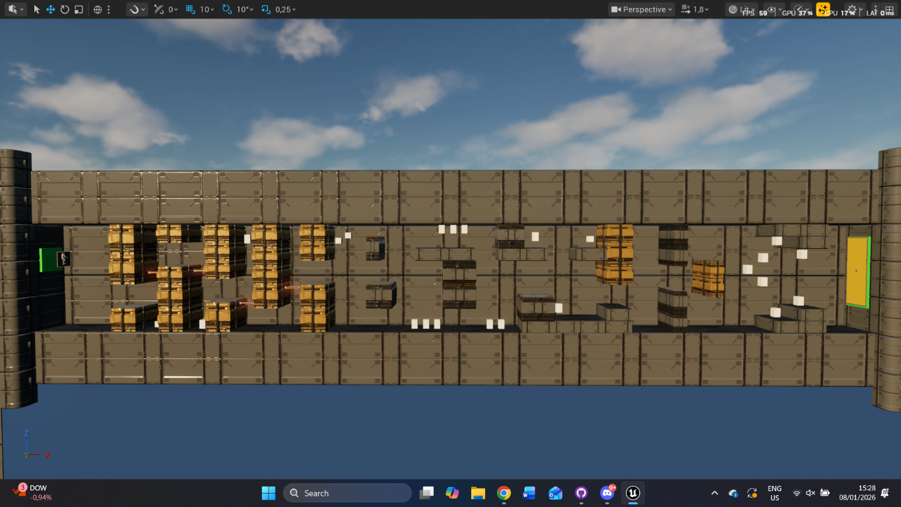
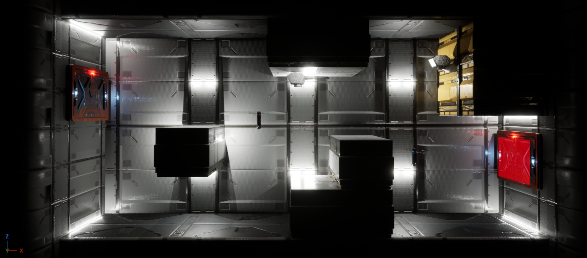
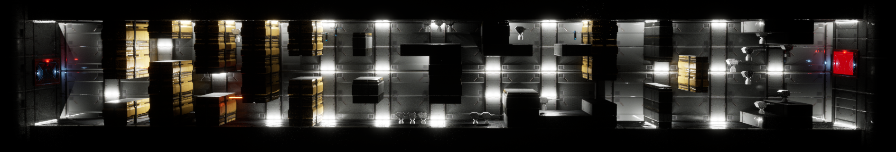
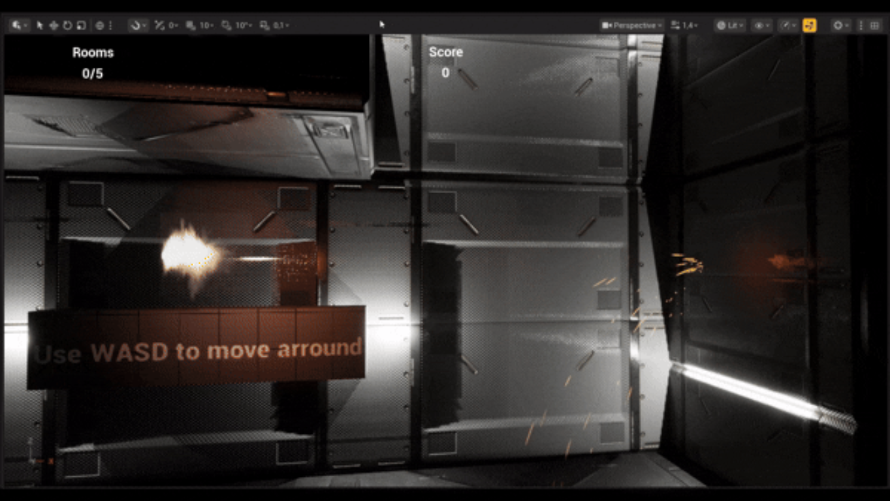
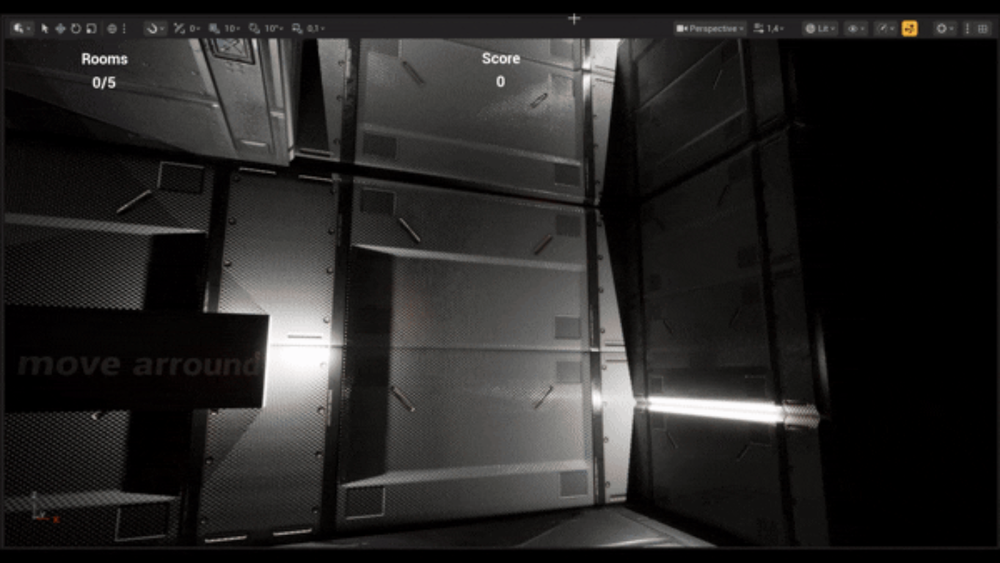

Project Splitstar
Room-based shooter · Level design · Visual effects & UI
- Contribution
- Level design, environment, visual effects, UI
- Format
- 2.5D room-based shooter
- Engine
- Unreal Engine 5.6
Overview
Splitstar is a combat-focused 2.5D shooter where players fight through a sequence of rooms. I worked on the level design, visual effects, and user interface, shaping the route so each space builds on the movement and combat introduced before it.
I began with a room-by-room plan, then used Unreal blockouts to test how the spaces played before moving into visual polish. That process helped me connect the overall progression to the details players read moment to moment: routes, obstacles, effects, and on-screen information.


Design & gameplay
Spatial design & player flow
I divided the level into rooms with distinct gameplay purposes. Their layouts and obstacles help players understand where they can move, keeping attention on the encounter rather than on finding a route.
Room size and shape control the pace. Tighter spaces create pressure, while more open arenas reward positioning and awareness. Across the level, the layout stays readable while asking players to keep moving. This variety helps each encounter feel like a new step in the journey rather than another version of the same room.
Room-by-room progression
Each room has a distinct role in the progression, building from the introduction of the core mechanics to a final test of the player's skills. I used this sequence to introduce challenges in stages, then combine them in later encounters.
- Introduction: teaches the core mechanics and basic combat.
- Vertical gameplay: focuses on upward movement and avoiding hazards.
- Transition space: combines movement styles to create a smoother flow.
- Gauntlet: tests endurance and punishes mistakes.
- Boss arena: uses an open layout that demands constant movement and awareness.


Environment & readability
I designed the environment to make gameplay clear while maintaining a consistent visual style. Walls, floors, and obstacles define movement space and interaction areas. Careful spacing and alignment help prevent visual clutter during combat.
Curved wall elements make the rooms feel less artificial. I also enclosed the level to maintain immersion and hide the world beyond the playable area. Repeating the industrial materials across different spaces ties the sequence together, while room layouts and lighting help distinguish one encounter from the next.
Weapon feedback
I designed the weapon effects to make combat feel responsive. The muzzle flash gives players immediate visual confirmation when they fire, helping connect an input to what happens on screen.

Layered explosion effect
I built the explosion in layers, combining sparks, smoke, fire, and a flash of light so the impact reads clearly against the dark environment.
Starting with elements from the impact and dust effects helped me build a larger effect that still felt consistent with the rest of the game. Combining the layers gave the explosion a clear beginning and impact, while its bright flash stands out against the darker environment.

HUD structure
I divided the HUD into two parts to keep information organized. The player-focused section displays health, ability cooldowns, and active power-ups. These details stay readable at a glance so players can make quick decisions during combat.
The system-focused section shows progression details, such as the current room and score. This gives players useful context without distracting them from the action. Separating immediate player information from level progress made it easier to scan the HUD during a fast encounter.
Development
Planning, testing & iteration
I started by mapping out the level in Figma, then built greybox blockouts in Unreal Engine to test navigation, scale, and movement. This gave me a chance to check the level's basic flow before committing to detailed environments.
During playtests, I checked whether the layout felt clear and intuitive, and whether the movement spaces supported the intended encounters. I then refined the level by adding elevation, increasing the challenge in key areas, and introducing paths that asked players to weigh risk against reward.
What I learned
- Progression sustains engagementVarying rooms and encounters can raise the challenge gradually without overwhelming the player.
- Blockouts support fast iterationTesting navigation and scale early makes layout changes easier before detailed environments are built.
- Playtesting validates decisionsTesting helped me check whether the route and difficulty worked for players before moving on to final polish.
- Integrate effects with the experiencePlanning for VFX alongside combat helps effects communicate gameplay instead of feeling like a late addition.
- Clear UI supports quick decisionsOrganizing player information separately from room and score progress keeps the HUD easier to scan during combat.